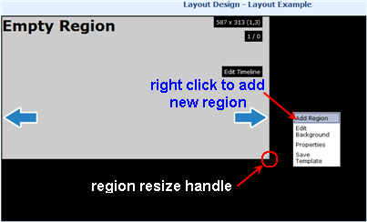
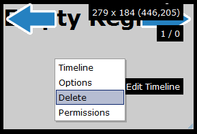
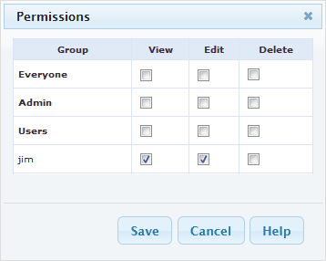

As you make the region smaller, you'll see the background (layout canvas) behind. Right click on the background and choose "Add Region".

You should see a new region appears. You can move it around or resize it in the same way as you did before.
If you intend to display video within the region it is advisable to ensure that the region provides the same aspect ratio as the video, otherwise black spaces will be visible.
If you decide you do not want a region any more, right click on it and choose "Delete".
Note that you will loose any media items contained in the region that are not in the library (eg Text, RSS Tickers, Embedded HTML).

The owner of the layout has full control on how the new layout is to be shared. A globally shared layout may have one of its layout region access rights being disabled for any other user edit. Right click within the region and select "Permissions" to define the selected region access rights to other users of the xibo system
